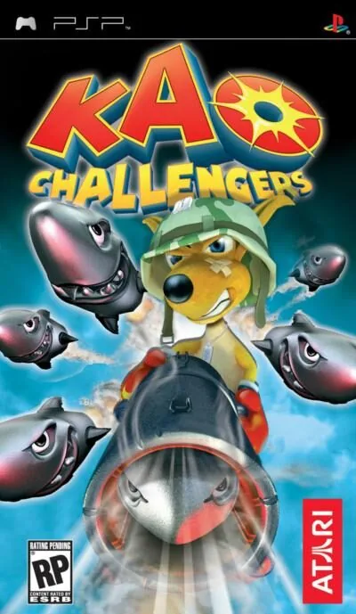

PSP
Kao Challengers
- Año: 2006
El canguro amarillo llega a PSP con su combinación de movimientos rápidos y plataformas.
Kao Challengers presenta un universo rico y colorido, con 23 niveles de acción repartidos en seis mundos diferentes. Los ambientes van desde el hábitat australiano de Kao hasta lugares menos soleados como el Ártico.
Derrota al malvado cazador Barnaba y su grupo de crueles secuaces.
Utiliza los medios de transporte más insólitos como una catapulta o un pelícano.
Modos de carrera multijugador y plataformas.
Controles
que Kao se mueva con el joystick y qué botones saltan, golpean y lanzan el bumerán (⚠️ no he encontrado los controles). ¿Va fluido?
Mando de PSP. El joystick mueve la cruceta y también la palanca analógica, porque muchos juegos de PSP solo se mueven con ella.
| Panel | Juego |
|---|---|
 | ✕ |
 | ○ |
 | R |
 | □ |
 | △ |
 | L |
 | Start |
 | Select |
+  | Salir del juego |
El panel en PSP


Argumento
Recopilado de internet (2026-11-04). Lo marcado con ⚠️ no está probado en la bartop.
El malvado cazador del primer juego vuelve y captura a Kao, el canguro boxeador, y a todos sus amigos para vengarse. Kao escapa de su barco y tiene que vencer al cazador y a sus aliados para salvar a sus amigos.
Final: según los capítulos del vídeo, Kao llega al galeón del cazador y lo vence en un duelo final.
Jugabilidad
Recopilado de internet (2026-11-04). Lo marcado con ⚠️ no está probado en la bartop.
- Plataformas y acción en 3D: nueva versión para PSP de Kao the Kangaroo: Round 2, con la misma historia.
- Estructura: más de 20 niveles en cinco mundos, cada uno con su ambiente, más niveles de bonus (ver «Guía de niveles»).
- Kao golpea con sus guantes de boxeo, vuela, lanza bumeranes, conos y otros objetos, nada y patina.
- Vehículos: tabla de snowboard, catapulta, pelícano, barril en el agua y lancha.
- Enemigos: más de 30, con siete formas de luchar y su propia personalidad.
- Multijugador con 15 armas (bombas, lanzallamas, imán…).
Botones según las guías (⚠️ por confirmar)
- ⚠️ No he encontrado los controles de la versión PSP.
Guía de niveles
Recopilado de internet (2026-11-04). Lo marcado con ⚠️ no está probado en la bartop.
| Mundo | Niveles (y jefes) |
|---|---|
| Bosque | Beaver's Forest · The Great Escape · Great Trees · River Raid · Shaman's Cave |
| Hielo | Igloo Village · Ice Cave · Down the Hill · Crystal Mines · The Station |
| Mar | The Race · Hostile Reef · Deep Ocean · Lair of Poison |
| Isla | Trip to Island · Treasure Island · The Volcano · Pirate's Bay |
| Pantano | Lost Village · The Chase · Swamps · Witch's Hut |
| Final | Abandoned Town · Hunter's Galleon · Final Duel |
- Hay cuatro niveles de bonus: cuerda, árboles, tiro y carrera.
- Nombres y jefes: los de los capítulos del vídeo; ⚠️ los nombres de los mundos son míos.
Objetos
Recopilado de internet (2026-11-04). Lo marcado con ⚠️ no está probado en la bartop.
| Objeto | Qué hace |
|---|---|
| Bumerán | Se lanza contra los enemigos |
| Conos y otros objetos | Se pueden lanzar |
| Vehículos | Snowboard, catapulta, pelícano, barril y lancha |
Trucos y secretos
Recopilado de internet (2026-11-04). Lo marcado con ⚠️ no está probado en la bartop.
- Niveles de bonus: cuerda, árboles, tiro y carrera (según el vídeo).
- ⚠️ No he encontrado trucos.
Longplay

Partida completa de la versión PSP (224 min), de Project Longplay: Kao Challengers - Longplay, PSP.
Pulsa el minuto de un nivel para ver el vídeo desde ese punto.
Niveles
| Mundo | Niveles |
|---|---|
| Bosque | |
| Hielo | |
| Mar | |
| Isla | |
| Pantano y bonus | |
| Final | |
| Otros momentos |